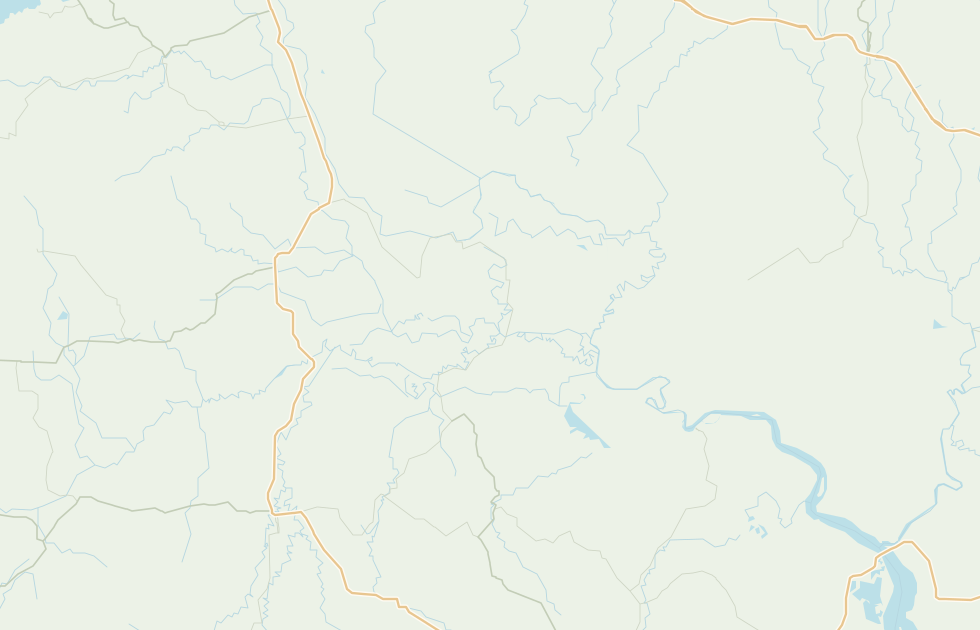

Omitir e ir al contenido
Juntos por un
Carrillo más limpio
Consultá la recolección, aprendé a preparar tus residuos y encontrá dónde entregarlos en tu comunidad.
Ej. Sardinal, Filadelfia o Belén. ¿Buscás un material? Entrá en Cómo reciclar.
Elegí una comunidad de la lista para consultar el ejemplo.
Rutas y horarios de recolección
Seleccioná tu comunidad para consultar el horario y el recorrido de ejemplo.
Calendario de recolección
SardinalDistrito de Sardinal
Próxima recolección del ejemploBasura ordinaria
Martes · 6:00 a. m. a 12:00 m. d.

Basura ordinaria
Día y horario pendientes de verificación
 Por confirmar
Por confirmar
Residuos orgánicos
Sin recorrido verificado
Confirmá el horario vigente con la Municipalidad.
Consultá el calendario desde el selector o el mapa.

Los horarios son ficticios. Confirmá el servicio real antes de sacar los residuos.
¿Cómo separar tus residuos?
Una guía para preparar los materiales antes de llevarlos a un lugar de entrega.
Papel y cartón
- Periódicos y hojas
- Cajas plegadas
- Papel limpio y seco
Plástico
- Botellas vacías
- Envases sin restos
- Tapas, según recepción
Metales
- Latas de bebidas
- Envases metálicos vacíos
- Según condiciones del receptor
Vidrio
- Botellas y frascos
- Envases protegidos
- Confirmar el tipo de vidrio
Va al reciclaje
Botellas plásticas vacías, latas, cartón y papel limpios, frascos de vidrio.
Va a la basura ordinaria
Pañales, papel higiénico y servilletas usadas, empaques de snacks y cerámica rota.
Electrónicos
Equipos que requieren una opción de entrega específica.
Muebles
Consultá tamaños, cantidades y jornadas autorizadas.
6 materiales de referencia
Los colores identifican materiales. Consultá qué recipiente pide cada punto de entrega.
No encontramos ese material
Probá otro nombre o borrá la búsqueda para volver a la guía.
Centros de acopio y reciclaje
Buscá una opción de entrega y revisá los horarios, materiales y condiciones.
2 centros de ejemplo
Sardinal, Carrillo · Lugar ficticio
Lun. a vie. · 8:00 a. m. a 3:00 p. m.
Papel y cartónPlásticoMetal
Filadelfia, Carrillo · Lugar ficticio
Lun. a vie. · 8:00 a. m. a 2:00 p. m.
Papel y cartónPlásticoVidrioMetal
No hay coincidencias
Probá otra comunidad o material. Las jornadas temporales están en Avisos y campañas.
Abrí la ficha de un lugar desde la lista o el mapa.

Los marcadores señalan localidades de referencia. Confirmá la dirección antes de ir.
Las ubicaciones, horarios y materiales son ficticios. Confirmá una dirección y un contacto reales antes de trasladar residuos.
Avisos y campañas
Consultá los cambios de recolección y las jornadas del escenario de prueba.
2 avisos de ejemplo
Sardinal · Aviso ficticio · 26–27 oct. 2026Cambio en el día de recolección
En el ejemplo, el lunes 26 se reprograma para el martes 27 de octubre.
Belén · Campaña ficticia · 31 oct. 2026Jornada de residuos especiales
Consultá qué se recibe y cómo preparar equipos y muebles para la entrega.
Cambios y campañas de ejemplo, pendientes de confirmación municipal.
No hay avisos de ejemplo con esos filtros
Elegí otra comunidad o consultá todos los avisos.
Reportes y consultas
Probá cómo plantear una consulta sobre recolección, materiales o lugares de entrega.
Prepará la información de tu reporte
- Elegí el tipo de reporte y tu comunidad.
- Usá una descripción de ejemplo.
- Podés representar una foto y revisar el resumen.
Podés cancelar en cualquier momento. Si ingresaste información, te pediremos confirmar el descarte.
Demostración académica · El reporte se simula en este navegador.
Nuevo reporte
Elegí las opciones y usá el texto de ejemplo.
Revisá tu reporte de prueba
Comprobá los datos antes de terminar la demostración.
- Tipo de reporte
- Comunidad
- Descripción
- Foto opcional
Demostración académica · La información se usa solo en este navegador.
Demostración completada

No se envió ningún reporte real
La información y el adjunto se representaron en el prototipo. La Municipalidad no recibió ningún reporte.